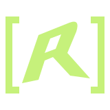
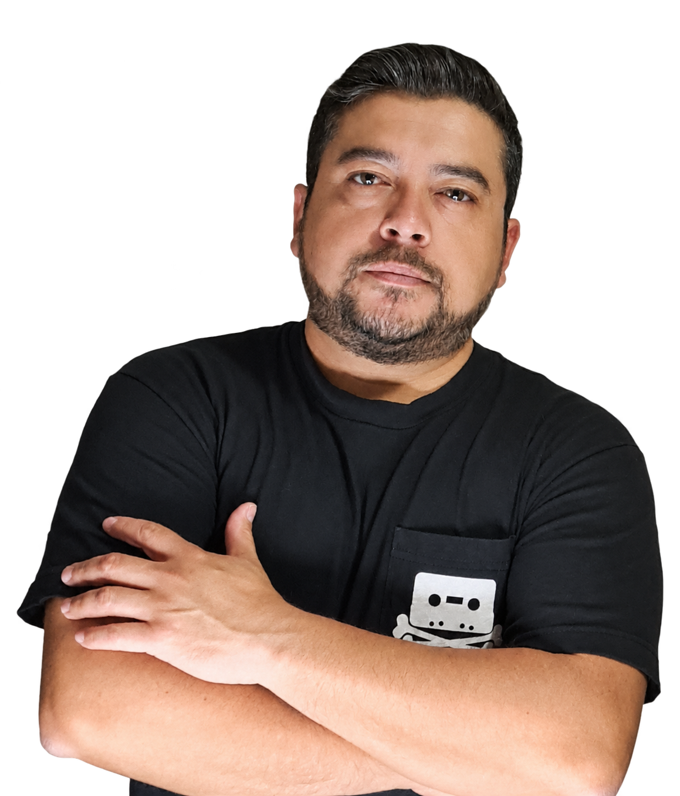

Sitio corporativo
Electro Gestión
Presencia digital para conectar empresa y clientes.

INGENIERÍA · DESARROLLO · VISIÓN
Soy Renato Báez Lobos, ingeniero en Computación e Informática. Cofundador de rside.cl ↗ y fundador de prendeo.cl ↗.

20°13′ S 70°09′ O
DESDE EL NORTE, CREANDO CONEXIONES.
01 / SOBRE MÍ
Más de 12 años creando soluciones y liderando proyectos que acercan la tecnología a las necesidades reales de un negocio.
Mi experiencia abarca análisis de sistemas, desarrollo de software y gestión de proyectos TI. Combino patrones de diseño y metodologías ágiles con una forma de trabajar colaborativa y orientada a resolver.
Me motiva construir, aprender y conectar ideas. Disfruto acompañar equipos y transformar desafíos complejos en herramientas útiles.
02 / TRABAJO SELECCIONADO
Web, aplicaciones y sistemas.
Distintos desafíos, la misma dedicación.
Sitio corporativo
Presencia digital para conectar empresa y clientes.
Web & escritorio
Software integrado con dispositivos biométricos.
Catálogo web
Un catálogo digital para explorar productos.
Software de gestión
Herramientas para conectar la operación del negocio.
Aplicación Android
Lectura de códigos con la cámara del móvil.
E-commerce
Tienda online con WordPress y WooCommerce.
03 / EXPERTISE
Interfaces y servicios que conectan personas, tecnología y negocio.
Aplicaciones e integraciones para resolver desafíos operacionales.
Liderazgo colaborativo y buenas prácticas en cada proyecto.
04 / TRAYECTORIA
Importadora Marazul SPA.
Sociedad United American Ltda.
Wara Servicios Gráficos y Publicitarios Ltda.
Importadora Eximben S.A.C.
Importadora Marazul SPA.
Dreamside Ltda.
05 / SIGUIENTE CONVERSACIÓN
¿Tienes un proyecto en mente?
Conversemos sobre cómo hacerlo realidad.